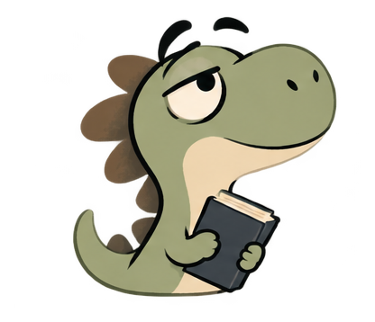

Practice Lab · Learn with purpose
Practice smarter.
One skill at a time.
TOEFL-focused exercises and skill boosters designed for focused, independent practice.

TOEFL Exam Practice
Skill Boosters
This is a work-in-progress preview. Available trainers are marked inside each lab.